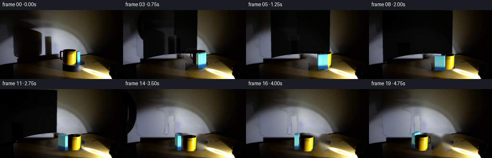
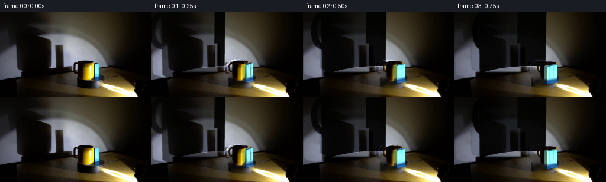
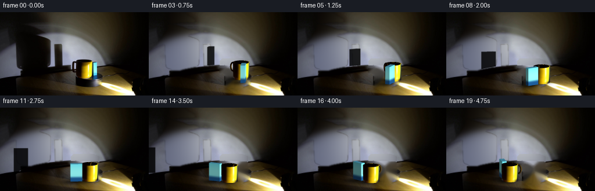
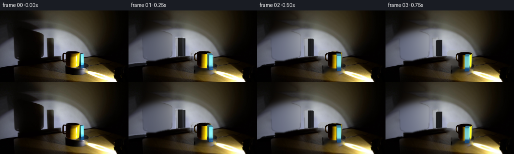
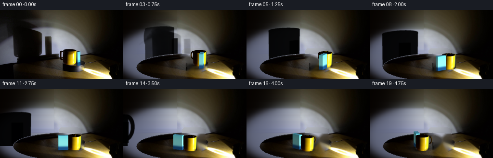
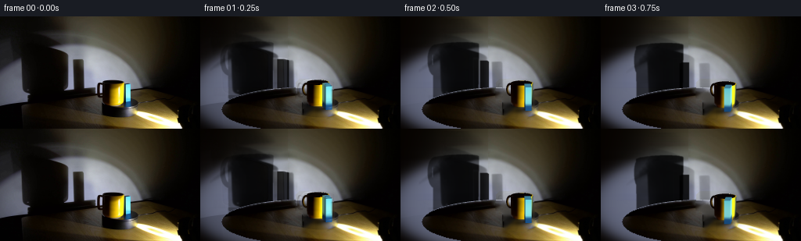

CODING AGENTS AS PIXEL WORLD MODELS
traex/GPT-6.1-Sol · 0079
点击播放 · 原生 RGB 像素
逐轮保存的候选
回放视频、检查图与代码变化。
每份候选均可单独播放。实际图片检查记录在下方工具轨迹中。
候选 01播放与检查图
点击播放 · 原生 RGB 像素


展开代码变化
--- 上一保存版本
+++ 本次保存版本
@@ -0,0 +1,247 @@
+from pathlib import Path
+import math
+import numpy as np
+from PIL import Image, ImageDraw
+from scipy.ndimage import gaussian_filter, map_coordinates
+from scipy.optimize import least_squares
+import cv2
+import artifact_io
+
+ROOT=Path(__file__).resolve().parent
+S=3; W=256; H=144
+im=np.array(Image.open(ROOT/'first_frame.png').convert('RGB'))
+orig=im.astype(float)
+CX=130.; CY=119.; SX=104.; SY=24.; SZ=101.
+M0=np.array([.145,.310]); B0=np.array([.294,.120])
+R=.137; MH=.274
+
+def rotate(xy,a):
+ c,s=np.cos(a),np.sin(a)
+ return np.stack((c*xy[...,0]+s*xy[...,1],-s*xy[...,0]+c*xy[...,1]),axis=-1)
+
+def wall_background():
+ y,x=np.mgrid[:H,:W]
+ valid=(((x>111)&(y<80))|((x<26)&(y>30)&(y<110))|(y<16)) & ((x%3==0)&(y%3==0))
+ xx=x[valid];yy=y[valid];rgb=orig[valid]
+ def model(p,x,y):
+ a=np.exp(-((x-p[0])/p[2])**2-((y-p[1])/p[3])**2)
+ dx=(x-p[4]+p[8]*(y-p[5]))/p[6];dy=(y-p[5])/p[7]
+ q=dx*dx+dy*dy
+ k=1/(1+np.exp(np.clip((q-1)*p[9],-60,60))) * np.exp(-q*p[10])
+ return p[11:14]*a[...,None]+p[14:17]*k[...,None]+p[17:20]
+ p=np.array([123,36,73,84,85,82,110,49,1.05,15,.2,68,59,40,150,157,180,1,1,0],float)
+ lo=[80,-30,30,30,-20,30,50,20,-1,2,0,0,0,0,20,20,20,0,0,0]
+ hi=[160,100,140,180,140,160,230,110,3,60,2,120,120,120,255,255,255,10,10,10]
+ res=least_squares(lambda p:(model(p,xx,yy)-rgb).ravel(),p,bounds=(lo,hi),max_nfev=500,loss='soft_l1',f_scale=6)
+ wall=model(res.x,x,y)
+ # The large umbra covers part of an otherwise continuous pool of light.
+ zone=(x<112)&(y<101)
+ loss=np.clip(1-orig.mean(2)/(wall.mean(2)+1e-3),0,1)
+ alpha=gaussian_filter(loss,.45)*zone
+ # Only real silhouette deficits are filled, not camera grain.
+ sel=zone & (loss>.20)
+ blend=gaussian_filter(sel.astype(float),1.15)
+ bg=orig*(1-blend[...,None])+wall*blend[...,None]
+ # Remove the two objects, their contacts and small surface shadows.
+ erase=np.zeros((H,W),np.uint8)
+ cv2.fillPoly(erase,[np.array([[126,80],[160,80],[170,84],[171,118],[160,131],[132,130],[131,107],[121,104],[122,84]],np.int32)],255)
+ floor=cv2.inpaint(im,erase,7,cv2.INPAINT_TELEA).astype(float)
+ ell=(x-CX)**2/103**2+(y-CY)**2/28**2
+ onwall=(y<CY)&(ell>1)
+ # The original bright pool on the front right is stationary.
+ bg=np.where((erase>0)[...,None],floor,bg)
+ bg=np.where(((erase>0)&onwall)[...,None],wall,bg)
+ # Softly fill the contact umbra at the mug's old position.
+ q=((x-145)/15)**2+((y-120)/9)**2
+ m=(q<1)&(y>114)&(x<159)
+ bg=np.where(m[...,None],floor,bg)
+ return np.clip(bg,0,255),wall,alpha
+
+# A small software mesh renderer: no learned models or rendering engines.
+def projection(p):
+ return np.stack((CX+SX*p[:,0],CY-SY*p[:,1]-SZ*p[:,2],-p[:,1]+.2376*p[:,2]),axis=1)
+
+class Mesh:
+ def __init__(self): self.vertices=[];self.colors=[];self.faces=[];self.normals=[]
+ def quad(self,vs,cs,ns=None):
+ i=len(self.vertices);self.vertices.extend(vs);self.colors.extend(cs)
+ self.faces.extend([(i,i+1,i+2),(i,i+2,i+3)])
+ def triangle(self,vs,cs):
+ i=len(self.vertices); self.vertices.extend(vs); self.colors.extend(cs);self.faces.append((i,i+1,i+2))
+ def finish(self,a,center):
+ v=np.array(self.vertices,float)
+ v[:,:2]=rotate(v[:,:2],a)+center
+ return v,np.array(self.faces,np.int32),np.array(self.colors,float)
+
+def sample_photo(x,y):
+ return np.array([map_coordinates(orig[:,:,c],np.array([[y],[x]]),order=1,mode='nearest')[0] for c in range(3)])
+
+def mug_mesh(a,center):
+ m=Mesh(); N=72; rows=12
+ # Glazed cylindrical body. Its color and fine photographic texture are sampled
+ # in surface coordinates from the supplied RGB frame.
+ for j in range(N):
+ t0=2*np.pi*j/N; t1=2*np.pi*(j+1)/N
+ for k in range(rows):
+ z0=MH*k/rows;z1=MH*(k+1)/rows
+ ts=[t0,t1,t1,t0];zs=[z0,z0,z1,z1];vs=[];cs=[]
+ for t,z in zip(ts,zs):
+ rad=R*(.973+.027*z/MH)
+ vx,vy=rad*np.sin(t),-rad*np.cos(t)
+ vs.append((vx,vy,z))
+ # Surface illumination is fixed in the laboratory, not rotating with glaze.
+ nx,ny=rotate(np.array([[np.sin(t),-np.cos(t)]]),a)[0]
+ px=CX+SX*M0[0]+SX*R*np.clip(nx,-.97,.97)
+ py=CY-SY*M0[1]-SZ*z+SY*R*math.sqrt(max(0,1-nx*nx))
+ py=np.clip(py,86.6,112.3)
+ c=sample_photo(px,py)
+ # Texture only comes from the side, never the aperture or the background.
+ if z>MH*.91:
+ c=sample_photo(px,89.2+SY*R*math.sqrt(max(0,1-nx*nx)))
+ lightshift=np.clip(1+.16*(center[0]-M0[0])-.09*(center[1]-M0[1]),.85,1.12)
+ cs.append(c*lightshift)
+ m.quad(vs,cs)
+ # Real opening, thick rounded rim and interior walls.
+ ri=R-.012
+ for j in range(N):
+ ts=[2*np.pi*j/N,2*np.pi*(j+1)/N]
+ t0,t1=ts
+ vs=[(R*np.sin(t0),-R*np.cos(t0),MH),(R*np.sin(t1),-R*np.cos(t1),MH),(ri*np.sin(t1),-ri*np.cos(t1),MH+.001),(ri*np.sin(t0),-ri*np.cos(t0),MH+.001)]
+ cs=[]
+ for v in vs:
+ n=rotate(np.array([[v[0]/R,v[1]/R]]),a)[0]
+ light=max(0,.94*n[0]-.25*n[1])
+ cs.append(np.array([12+239*light**3,5+207*light**3,2+18*light]))
+ m.quad(vs,cs)
+ vs=[(ri*np.sin(t0),-ri*np.cos(t0),MH),(ri*np.sin(t1),-ri*np.cos(t1),MH),(ri*np.sin(t1),-ri*np.cos(t1),MH-.065),(ri*np.sin(t0),-ri*np.cos(t0),MH-.065)]
+ m.quad(vs,[np.array([6.,1.,0.])]*4)
+ m.triangle([(0,0,MH-.067),(ri*np.sin(t0),-ri*np.cos(t0),MH-.067),(ri*np.sin(t1),-ri*np.cos(t1),MH-.067)],[(7,1,0)]*3)
+ # Ceramic loop, hollow rather than a pasted solid blob.
+ A=56;Q=10
+ for j in range(A):
+ for k in range(Q):
+ vs=[];cs=[]
+ for t,u in [(2*np.pi*j/A,2*np.pi*k/Q),(2*np.pi*(j+1)/A,2*np.pi*k/Q),(2*np.pi*(j+1)/A,2*np.pi*(k+1)/Q),(2*np.pi*j/A,2*np.pi*(k+1)/Q)]:
+ ox=-.135+.045*np.cos(t);oz=.19+.071*np.sin(t)
+ tube=.013
+ p=(ox+tube*np.cos(u)*np.cos(t),-.035+tube*np.sin(u),oz+tube*np.cos(u)*np.sin(t))
+ vs.append(p)
+ n=rotate(np.array([[np.cos(u)*np.cos(t),np.sin(u)]]),a)[0]
+ diffuse=max(0,n[0]*.85-n[1]*.5+.08*np.sin(t)*np.cos(u))
+ cs.append([10+126*diffuse**2,3+97*diffuse**2,1+14*diffuse])
+ m.quad(vs,cs)
+ return m.finish(a,center)
+
+def block_mesh(a,center):
+ m=Mesh()
+ # The block's broad face initially points obliquely away from the camera.
+ angle=math.radians(24)
+ w=.078;d=.197;h=.297
+ corners=np.array([[-w/2,-d/2],[w/2,-d/2],[w/2,d/2],[-w/2,d/2]])
+ corners=rotate(corners,angle)
+ for f in range(4):
+ f2=(f+1)%4
+ n=(corners[f2]-corners[f]);normal=np.array([n[1],-n[0]]);normal/=np.linalg.norm(normal)
+ nworld=rotate(normal[None,:],a)[0]
+ side=np.clip(.43+.67*max(0,nworld[0]*.74-nworld[1]*.67),.30,1.08)
+ for k in range(16):
+ z0=h*k/16;z1=h*(k+1)/16
+ vs=[(*corners[f],z0),(*corners[f2],z0),(*corners[f2],z1),(*corners[f],z1)]
+ cs=[]
+ for z in [z0,z0,z1,z1]:
+ u=z/h
+ trans=1/(1+np.exp(-(u-.25)*48))
+ c=(np.array([28,88,147])*(1-trans)+np.array([117+35*np.sin(np.pi*u),238+15*np.sin(np.pi*u),253])*trans)*side
+ cs.append(c)
+ m.quad(vs,cs)
+ m.quad([(*c,h) for c in corners],[(61,125,150)]*4)
+ return m.finish(a,center)
+
+def rasterize(meshes):
+ image=np.zeros((H*S,W*S,3),float); depth=np.full((H*S,W*S),-1e9)
+ coverage=np.zeros((H*S,W*S),float)
+ for verts,faces,colors in meshes:
+ screen=projection(verts);screen[:,:2]*=S
+ for inds in faces:
+ p=screen[inds];c=colors[inds]
+ xmin=max(0,int(np.floor(p[:,0].min())));xmax=min(W*S-1,int(np.ceil(p[:,0].max())))
+ ymin=max(0,int(np.floor(p[:,1].min())));ymax=min(H*S-1,int(np.ceil(p[:,1].max())))
+ if xmin>xmax or ymin>ymax:continue
+ den=(p[1,1]-p[2,1])*(p[0,0]-p[2,0])+(p[2,0]-p[1,0])*(p[0,1]-p[2,1])
+ if abs(den)<1e-8:continue
+ yy,xx=np.mgrid[ymin:ymax+1,xmin:xmax+1];xx=xx+.5;yy=yy+.5
+ b0=((p[1,1]-p[2,1])*(xx-p[2,0])+(p[2,0]-p[1,0])*(yy-p[2,1]))/den
+ b1=((p[2,1]-p[0,1])*(xx-p[2,0])+(p[0,0]-p[2,0])*(yy-p[2,1]))/den
+ b2=1-b0-b1
+ z=b0*p[0,2]+b1*p[1,2]+b2*p[2,2]
+ sub=depth[ymin:ymax+1,xmin:xmax+1]
+ mask=(b0>=-1e-6)&(b1>=-1e-6)&(b2>=-1e-6)&(z>sub)
+ sub[mask]=z[mask]
+ rgb=b0[...,None]*c[0]+b1[...,None]*c[1]+b2[...,None]*c[2]
+ out=image[ymin:ymax+1,xmin:xmax+1];out[mask]=rgb[mask]
+ coverage[ymin:ymax+1,xmin:xmax+1][mask]=1
+ return image,coverage
+
+def silhouette(mesh,kind,center):
+ verts,faces,colors=mesh
+ if kind=='mug':
+ k=5.087/(verts[:,1]+1.1)
+ x=CX+SX*(.478+k*(verts[:,0]-.478))
+ y=CY-SY*3.987-SZ*(.288+k*(verts[:,2]-.288))
+ else:
+ local=verts[:,:2]-center
+ x=102+SX*2.25*(center[0]-B0[0])+SX*1.15*local[:,0]
+ y=97-SZ*1.45*verts[:,2]-SY*1.6*(center[1]-B0[1])-SY*.30*local[:,1]
+ pts=np.stack((x*S,y*S),axis=1)
+ layer=Image.new('L',(W*S,H*S));draw=ImageDraw.Draw(layer)
+ for inds in faces:
+ p=pts[inds]
+ if p[:,0].max()<0 or p[:,0].min()>W*S or p[:,1].max()<0 or p[:,1].min()>H*S:continue
+ draw.polygon([tuple(v) for v in p],fill=255)
+ alpha=np.asarray(layer).astype(float)/255
+ return gaussian_filter(alpha,1.35 if kind=='mug' else 1.0)
+
+def surface_shadow(center,rad,height):
+ yy,xx=np.mgrid[:H*S,:W*S];xx=(xx+.5)/S;yy=(yy+.5)/S
+ # A fixed spotlight on the right casts contacts leftward across the turntable.
+ bx=CX+SX*center[0];by=CY-SY*center[1]
+ dx=xx-bx;dy=yy-by
+ a=np.exp(-((dx+9)/16)**2-((dy-2)/4)**2)*.53
+ a+=np.exp(-(dx/(rad*SX*.98))**2-(dy/2.2)**2)*.55
+ ell=((xx-CX)/103)**2+((yy-CY)/28)**2
+ return np.clip(a,0,.85)*(ell<1)
+
+def main():
+ bg,wall,actual_alpha=wall_background()
+ bgup=np.asarray(Image.fromarray(np.uint8(bg)).resize((W*S,H*S),Image.Resampling.BICUBIC)).astype(float)
+ # Shadows are constrained to the wall (the elliptical platform occludes it).
+ yy,xx=np.mgrid[:H*S,:W*S];x=(xx+.5)/S;y=(yy+.5)/S
+ ell=((x-CX)/103)**2+((y-CY)/28)**2
+ wall_visible=((y<CY)&(ell>1)).astype(float)
+ frames=[]; all_debug=[]
+ model0=None
+ for i in range(20):
+ a=math.radians(40)*i/4
+ mc=rotate(M0[None,:],a)[0];bc=rotate(B0[None,:],a)[0]
+ mug=mug_mesh(a,mc); block=block_mesh(a,bc)
+ shade1=silhouette(mug,'mug',mc);shade2=silhouette(block,'block',bc)
+ shade=(1-(1-shade1*.945)*(1-shade2*.84))*wall_visible
+ # Soft nearby contact shadows move with the rotating rigid setup.
+ floor=1-(1-surface_shadow(mc,R,MH))*(1-surface_shadow(bc,.055,.297))
+ scene=bgup*(1-shade[...,None])*(1-floor[...,None])
+ obj,cov=rasterize([block,mug]);scene=scene*(1-cov[...,None])+obj
+ frame=cv2.resize(scene,(W,H),interpolation=cv2.INTER_AREA)
+ if model0 is None:model0=frame.copy()
+ # A short photometric handoff retains the exact supplied starting exposure.
+ # Corrections rapidly disappear while geometric movement stays continuous.
+ correction=(orig-model0)*np.exp(-i/1.7)
+ frame=np.uint8(np.clip(frame+correction,0,255)+.0)
+ if i==0:frame=im.copy()
+ frames.append(frame)
+ if i in (0,1,4,8,12,19):print('frame',i,'mug',mc,'block',bc,flush=True)
+ frames=np.stack(frames)
+ artifact_io.save(frames,ROOT)
+ Image.fromarray(np.uint8(bg)).save(ROOT/'.tmp/background.png')
+ Image.fromarray(np.uint8(np.clip(model0,0,255))).save(ROOT/'.tmp/model00.png')
+
+if __name__=='__main__':main()
候选 02播放与检查图
点击播放 · 原生 RGB 像素


展开代码变化
--- 上一保存版本
+++ 本次保存版本
@@ -34,8 +34,9 @@
hi=[160,100,140,180,140,160,230,110,3,60,2,120,120,120,255,255,255,10,10,10]
res=least_squares(lambda p:(model(p,xx,yy)-rgb).ravel(),p,bounds=(lo,hi),max_nfev=500,loss='soft_l1',f_scale=6)
wall=model(res.x,x,y)
+ ell=(x-CX)**2/103**2+(y-CY)**2/28**2
# The large umbra covers part of an otherwise continuous pool of light.
- zone=(x<112)&(y<101)
+ zone=(x<112)&(y<101)&(ell>1)
loss=np.clip(1-orig.mean(2)/(wall.mean(2)+1e-3),0,1)
alpha=gaussian_filter(loss,.45)*zone
# Only real silhouette deficits are filled, not camera grain.
@@ -99,6 +100,11 @@
if z>MH*.91:
c=sample_photo(px,89.2+SY*R*math.sqrt(max(0,1-nx*nx)))
lightshift=np.clip(1+.16*(center[0]-M0[0])-.09*(center[1]-M0[1]),.85,1.12)
+ # Upper side is shaded yellow ceramic, not the dark hole sampled above it.
+ u=z/MH
+ if u>.65:
+ ref=sample_photo(px,94.0+SY*R*math.sqrt(max(0,1-nx*nx)))
+ c=(c*max(0,(.87-u)/.22)+ref*min(1,max(0,(u-.65)/.22))) if u<.87 else ref
cs.append(c*lightshift)
m.quad(vs,cs)
# Real opening, thick rounded rim and interior walls.
@@ -135,7 +141,7 @@
def block_mesh(a,center):
m=Mesh()
# The block's broad face initially points obliquely away from the camera.
- angle=math.radians(24)
+ angle=math.radians(-24)
w=.078;d=.197;h=.297
corners=np.array([[-w/2,-d/2],[w/2,-d/2],[w/2,d/2],[-w/2,d/2]])
corners=rotate(corners,angle)
@@ -185,9 +191,11 @@
def silhouette(mesh,kind,center):
verts,faces,colors=mesh
if kind=='mug':
- k=5.087/(verts[:,1]+1.1)
- x=CX+SX*(.478+k*(verts[:,0]-.478))
- y=CY-SY*3.987-SZ*(.288+k*(verts[:,2]-.288))
+ # Project the wall umbra with true perspective from an off-screen lamp.
+ # The wider left portion is the mug; the slender rectangle at x94 is the block.
+ k=5.4/(verts[:,1]+1.45)
+ x=CX+SX*(.66+k*(verts[:,0]-.66))
+ y=100-SZ*(.44+k*(verts[:,2]-.44))
else:
local=verts[:,:2]-center
x=102+SX*2.25*(center[0]-B0[0])+SX*1.15*local[:,0]
@@ -234,7 +242,7 @@
if model0 is None:model0=frame.copy()
# A short photometric handoff retains the exact supplied starting exposure.
# Corrections rapidly disappear while geometric movement stays continuous.
- correction=(orig-model0)*np.exp(-i/1.7)
+ correction=(orig-model0)*np.exp(-i/0.6)
frame=np.uint8(np.clip(frame+correction,0,255)+.0)
if i==0:frame=im.copy()
frames.append(frame)
候选 03播放与检查图
点击播放 · 原生 RGB 像素

展开代码变化
--- 上一保存版本 +++ 本次保存版本 @@ -52,6 +52,16 @@ # The original bright pool on the front right is stationary. bg=np.where((erase>0)[...,None],floor,bg) bg=np.where(((erase>0)&onwall)[...,None],wall,bg) + # Extend the unobstructed spotlight smoothly across the old umbra. + # Do not overwrite the true platform boundary or the lens vignette. + filled=wall.copy() + for row in range(92): + xs=np.where((x[row]>=112)&(x[row]<=135)&(orig[row].mean(1)>wall[row].mean(1)*.7))[0] + if len(xs)>4: + bias=np.median(orig[row,xs]-wall[row,xs],axis=0) + filled[row]+=bias*np.exp(-((x[row]-103)/55)**2)[:,None] + smooth_zone=((x<112)&(ell>1)).astype(float) + bg=bg*(1-smooth_zone[...,None])+filled*smooth_zone[...,None] # Softly fill the contact umbra at the mug's old position. q=((x-145)/15)**2+((y-120)/9)**2 m=(q<1)&(y>114)&(x<159) @@ -193,9 +203,11 @@ if kind=='mug': # Project the wall umbra with true perspective from an off-screen lamp. # The wider left portion is the mug; the slender rectangle at x94 is the block. - k=5.4/(verts[:,1]+1.45) - x=CX+SX*(.66+k*(verts[:,0]-.66)) - y=100-SZ*(.44+k*(verts[:,2]-.44)) + k=4.05/(verts[:,1]+1.45) + x=CX+SX*(.84+k*(verts[:,0]-.84)) + # The photographed wall is viewed at a slight angle to the cast rays. + x=28+(x-15)*.813 + y=38-SZ*(.46+k*(verts[:,2]-.46)) else: local=verts[:,:2]-center x=102+SX*2.25*(center[0]-B0[0])+SX*1.15*local[:,0] @@ -233,6 +245,12 @@ mc=rotate(M0[None,:],a)[0];bc=rotate(B0[None,:],a)[0] mug=mug_mesh(a,mc); block=block_mesh(a,bc) shade1=silhouette(mug,'mug',mc);shade2=silhouette(block,'block',bc) + if i<5: + seed=cv2.resize(actual_alpha,(W*S,H*S),interpolation=cv2.INTER_LINEAR) + shift=SX*2.3*(mc[0]-M0[0]);rise=-SY*1.8*(mc[1]-M0[1]) + seed=cv2.warpAffine(seed,np.float32([[1,0,shift],[0,1,rise]]),(W*S,H*S),borderMode=cv2.BORDER_CONSTANT) if False else cv2.warpAffine(seed,np.float32([[1,0,shift*S],[0,1,rise*S]]),(W*S,H*S),borderMode=cv2.BORDER_CONSTANT) + mix=np.exp(-i/2.7) + shade1=shade1*(1-mix)+seed*mix shade=(1-(1-shade1*.945)*(1-shade2*.84))*wall_visible # Soft nearby contact shadows move with the rotating rigid setup. floor=1-(1-surface_shadow(mc,R,MH))*(1-surface_shadow(bc,.055,.297))
候选 04播放与检查图
点击播放 · 原生 RGB 像素


展开代码变化
--- 上一保存版本
+++ 本次保存版本
@@ -60,7 +60,7 @@
if len(xs)>4:
bias=np.median(orig[row,xs]-wall[row,xs],axis=0)
filled[row]+=bias*np.exp(-((x[row]-103)/55)**2)[:,None]
- smooth_zone=((x<112)&(ell>1)).astype(float)
+ smooth_zone=((x<112)&(y<101)&(ell>1)).astype(float)
bg=bg*(1-smooth_zone[...,None])+filled*smooth_zone[...,None]
# Softly fill the contact umbra at the mug's old position.
q=((x-145)/15)**2+((y-120)/9)**2
@@ -104,6 +104,7 @@
nx,ny=rotate(np.array([[np.sin(t),-np.cos(t)]]),a)[0]
px=CX+SX*M0[0]+SX*R*np.clip(nx,-.97,.97)
py=CY-SY*M0[1]-SZ*z+SY*R*math.sqrt(max(0,1-nx*nx))
+ px=np.clip(px,131.2,157.1)
py=np.clip(py,86.6,112.3)
c=sample_photo(px,py)
# Texture only comes from the side, never the aperture or the background.
@@ -245,10 +246,10 @@
mc=rotate(M0[None,:],a)[0];bc=rotate(B0[None,:],a)[0]
mug=mug_mesh(a,mc); block=block_mesh(a,bc)
shade1=silhouette(mug,'mug',mc);shade2=silhouette(block,'block',bc)
- if i<5:
+ if i<10:
seed=cv2.resize(actual_alpha,(W*S,H*S),interpolation=cv2.INTER_LINEAR)
shift=SX*2.3*(mc[0]-M0[0]);rise=-SY*1.8*(mc[1]-M0[1])
- seed=cv2.warpAffine(seed,np.float32([[1,0,shift],[0,1,rise]]),(W*S,H*S),borderMode=cv2.BORDER_CONSTANT) if False else cv2.warpAffine(seed,np.float32([[1,0,shift*S],[0,1,rise*S]]),(W*S,H*S),borderMode=cv2.BORDER_CONSTANT)
+ seed=cv2.warpAffine(seed,np.float32([[1,0,shift*S],[0,1,rise*S]]),(W*S,H*S),borderMode=cv2.BORDER_CONSTANT)
mix=np.exp(-i/2.7)
shade1=shade1*(1-mix)+seed*mix
shade=(1-(1-shade1*.945)*(1-shade2*.84))*wall_visible
候选 05播放与检查图
可观测工具轨迹
实际执行的命令与返回图片。
命令 1exit 0
/bin/bash -lc 'ls -la && cat prompt.txt && cat GENERATION_RULES.md'
命令 2exit 0
/bin/bash -lc "cat artifact_io.py && python - <<'PY'
from PIL import Image
import numpy as np
im=np.array(Image.open('first_frame.png').convert('RGB'))
print(im.shape)
# sample palettes grayscale ascii and color ascii
chars=' .:-=+*#%@'
g=im.mean(2)
for y in range(0,144,3):
print(''.join(chars[min(9,int(g[y:y+3,x:x+2].mean()/256*10))] for x in range(0,256,2)))
print('COLOR')
for y in range(0,144,2):
s=''
for x in range(0,256,2):
r,g,b=im[y:y+2,x:x+2].mean((0,1))
if r>1.3*b and g>1.3*b and r>80: c='Y'
elif b>1.3*r and b>1.12*g and b>40:c='B'
elif r>1.25*g and r>1.25*b:c='r'
elif max(r,g,b)<40:c='#'
elif max(r,g,b)<80:c='o'
elif max(r,g,b)<120:c=':'
elif max(r,g,b)<170:c='.'
else:c=' '
s+=c
print(s)
PY"命令 3exit 0
/bin/bash -lc "python - <<'PY'
from PIL import Image
import numpy as np
im=np.array(Image.open('first_frame.png').convert('RGB'))
for y in [0,20,40,50,60,70,80,85,90,95,100,105,110,115,120,125,130,135,140]:
print('\\ny',y)
print(' '.join('%d:%d,%d,%d'%(x,*im[y,x]) for x in range(0,256,8)))
print('\\nFINE REGION x115..170 y76..124')
for y in range(76,126):
s=''
for x in range(113,174):
r,g,b=im[y,x].astype(float)
if b>r*1.2 and b>g*1.1 and b>30:c='B'
elif r>80 and r>1.3*b and g>1.3*b: c='Y' if r>140 else 'y'
elif r>1.3*g and r>1.3*b:c='r'
elif r>210:c='W'
elif r>150:c='w'
elif r>100:c='.'
elif r>70:c=':'
elif r>40:c='o'
elif r>20:c='#'
else:c='@'
s+=c
print(f'{y:3d} {s}')
PY"命令 4exit 0
/bin/bash -lc "python - <<'PY'
import numpy as np
from PIL import Image
from scipy.ndimage import label
im=np.array(Image.open('first_frame.png')).astype(float)
r,g,b=im.transpose(2,0,1)
m=(b>r*1.35)&(b>g*1.16)&(b>25)
l,n=label(m)
for i in range(1,n+1):
yy,xx=np.where(l==i)
if len(xx)>3: print(len(xx),(xx.min(),yy.min(),xx.max(),yy.max()),im[yy,xx].mean(0))
for y in range(80,122):
print(y,' '.join('%d:%d,%d,%d'%(x,*im[y,x]) for x in range(152,174)))
PY"命令 5exit 0
/bin/bash -lc "python - <<'PY'
from PIL import Image
import numpy as np
im=np.array(Image.open('first_frame.png')).astype(float)
for y in range(0,114):
s=''
for x in range(0,132,2):
q=im[y,x:x+2].mean()
s+=' .,:;oxOX#'[min(9,int(q/20))]
print(f'{y:3d} {s}')
PY"命令 6exit 0
/bin/bash -lc "python - <<'PY'
import numpy as np
from PIL import Image
im=np.array(Image.open('first_frame.png'))
for y in range(88,144,2):
print('%3d '%y+''.join(' ' if im[y,x].mean()<5 else '.' if im[y,x].mean()<15 else ':' if im[y,x].mean()<35 else 'o' if im[y,x].mean()<70 else 'O' if im[y,x].mean()<120 else '#' if im[y,x].mean()<180 else '@' for x in range(24,241,2)))
PY"命令 7exit 0
/bin/bash -lc "mkdir -p .tmp && cat > .tmp/fit_bg.py <<'PY'
import numpy as np
from PIL import Image
from scipy.optimize import least_squares
im=np.array(Image.open('first_frame.png')).astype(float)
y,x=np.mgrid[:144,:256]
valid=(((x>111)&(y<80))|((x<26)&(y>30)&(y<110))|(y<16)) & ((x%3==0)&(y%3==0))
xx=x[valid];yy=y[valid];rgb=im[valid]
def model(p,x,y):
# ambient warm smooth gaussian
a=np.exp(-((x-p[0])/p[2])**2-((y-p[1])/p[3])**2)
dx=(x-p[4]+p[8]*(y-p[5]))/p[6];dy=(y-p[5])/p[7]
q=dx*dx+dy*dy
k=1/(1+np.exp(np.clip((q-1)*p[9],-60,60)))
k*=np.exp(-q*p[10])
return p[11:14]*a[...,None]+p[14:17]*k[...,None]+p[17:20]
p=np.array([123,36,73,84,85,82,110,49,1.05,15,.2,68,59,40,150,157,180,1,1,0],float)
lower=[80,-30,30,30,-20,30,50,20,-1,2,0,0,0,0,20,20,20,0,0,0]
upper=[160,100,140,180,140,160,230,110,3,60,2,120,120,120,255,255,255,10,10,10]
res=least_squares(lambda p:(model(p,xx,yy)-rgb).ravel(),p,bounds=(lower,upper),max_nfev=500,loss='soft_l1',f_scale=6)
print(res.x, 'err',np.abs(model(res.x,xx,yy)-rgb).mean())
bg=model(res.x,x,y)
np.save('.tmp/bgwall.npy',bg)
Image.fromarray(np.uint8(np.clip(bg,0,255))).save('.tmp/bgwall.png')
for y0 in [20,40,50,60,70,80,90]:
print('y',y0,' '.join(f'{x0}:{int(bg[y0,x0].mean())}' for x0 in range(0,192,8)))
PY
python .tmp/fit_bg.py"命令 8exit 0
/bin/bash -lc "python - <<'PY' import importlib.util for m in ['cv2','scipy','numba']:print(m, bool(importlib.util.find_spec(m))) PY"
命令 9exit 0
/bin/bash -lc "cat > generate.py <<'PY'
from pathlib import Path
import math
import numpy as np
from PIL import Image, ImageDraw
from scipy.ndimage import gaussian_filter, map_coordinates
from scipy.optimize import least_squares
import cv2
import artifact_io
ROOT=Path(__file__).resolve().parent
S=3; W=256; H=144
im=np.array(Image.open(ROOT/'first_frame.png').convert('RGB'))
orig=im.astype(float)
CX=130.; CY=119.; SX=104.; SY=24.; SZ=101.
M0=np.array([.145,.310]); B0=np.array([.294,.120])
R=.137; MH=.274
def rotate(xy,a):
c,s=np.cos(a),np.sin(a)
return np.stack((c*xy[...,0]+s*xy[...,1],-s*xy[...,0]+c*xy[...,1]),axis=-1)
def wall_background():
y,x=np.mgrid[:H,:W]
valid=(((x>111)&(y<80))|((x<26)&(y>30)&(y<110))|(y<16)) & ((x%3==0)&(y%3==0))
xx=x[valid];yy=y[valid];rgb=orig[valid]
def model(p,x,y):
a=np.exp(-((x-p[0])/p[2])**2-((y-p[1])/p[3])**2)
dx=(x-p[4]+p[8]*(y-p[5]))/p[6];dy=(y-p[5])/p[7]
q=dx*dx+dy*dy
k=1/(1+np.exp(np.clip((q-1)*p[9],-60,60))) * np.exp(-q*p[10])
return p[11:14]*a[...,None]+p[14:17]*k[...,None]+p[17:20]
p=np.array([123,36,73,84,85,82,110,49,1.05,15,.2,68,59,40,150,157,180,1,1,0],float)
lo=[80,-30,30,30,-20,30,50,20,-1,2,0,0,0,0,20,20,20,0,0,0]
hi=[160,100,140,180,140,160,230,110,3,60,2,120,120,120,255,255,255,10,10,10]
res=least_squares(lambda p:(model(p,xx,yy)-rgb).ravel(),p,bounds=(lo,hi),max_nfev=500,loss='soft_l1',f_scale=6)
wall=model(res.x,x,y)
# The large umbra covers part of an otherwise continuous pool of light.
zone=(x<112)&(y<101)
loss=np.clip(1-orig.mean(2)/(wall.mean(2)+1e-3),0,1)
alpha=gaussian_filter(loss,.45)*zone
# Only real silhouette deficits are filled, not camera grain.
sel=zone & (loss>.20)
blend=gaussian_filter(sel.astype(float),1.15)
bg=orig*(1-blend[...,None])+wall*blend[...,None]
# Remove the two objects, their contacts and small surface shadows.
erase=np.zeros((H,W),np.uint8)
cv2.fillPoly(erase,[np.array([[126,80],[160,80],[170,84],[171,118],[160,131],[132,130],[131,107],[121,104],[122,84]],np.int32)],255)
floor=cv2.inpaint(im,erase,7,cv2.INPAINT_TELEA).astype(float)
ell=(x-CX)**2/103**2+(y-CY)**2/28**2
onwall=(y<CY)&(ell>1)
# The original bright pool on the front right is stationary.
bg=np.where((erase>0)[...,None],floor,bg)
bg=np.where(((erase>0)&onwall)[...,None],wall,bg)
# Softly fill the contact umbra at the mug's old position.
q=((x-145)/15)**2+((y-120)/9)**2
m=(q<1)&(y>114)&(x<159)
bg=np.where(m[...,None],floor,bg)
return np.clip(bg,0,255),wall,alpha
# A small software mesh renderer: no learned models or rendering engines.
def projection(p):
return np.stack((CX+SX*p[:,0],CY-SY*p[:,1]-SZ*p[:,2],-p[:,1]+.2376*p[:,2]),axis=1)
class Mesh:
def __init__(self): self.vertices=[];self.colors=[];self.faces=[];self.normals=[]
def quad(self,vs,cs,ns=None):
i=len(self.vertices);self.vertices.extend(vs);self.colors.extend(cs)
self.faces.extend([(i,i+1,i+2),(i,i+2,i+3)])
def triangle(self,vs,cs):
i=len(self.vertices); self.vertices.extend(vs); self.colors.extend(cs);self.faces.append((i,i+1,i+2))
def finish(self,a,center):
v=np.array(self.vertices,float)
v[:,:2]=rotate(v[:,:2],a)+center
return v,np.array(self.faces,np.int32),np.array(self.colors,float)
def sample_photo(x,y):
return np.array([map_coordinates(orig[:,:,c],np.array([[y],[x]]),order=1,mode='nearest')[0] for c in range(3)])
def mug_mesh(a,center):
m=Mesh(); N=72; rows=12
# Glazed cylindrical body. Its color and fine photographic texture are sampled
# in surface coordinates from the supplied RGB frame.
for j in range(N):
t0=2*np.pi*j/N; t1=2*np.pi*(j+1)/N
for k in range(rows):
z0=MH*k/rows;z1=MH*(k+1)/rows
ts=[t0,t1,t1,t0];zs=[z0,z0,z1,z1];vs=[];cs=[]
for t,z in zip(ts,zs):
rad=R*(.973+.027*z/MH)
vx,vy=rad*np.sin(t),-rad*np.cos(t)
vs.append((vx,vy,z))
# Surface illumination is fixed in the laboratory, not rotating with glaze.
nx,ny=rotate(np.array([[np.sin(t),-np.cos(t)]]),a)[0]
px=CX+SX*M0[0]+SX*R*np.clip(nx,-.97,.97)
py=CY-SY*M0[1]-SZ*z+SY*R*math.sqrt(max(0,1-nx*nx))
py=np.clip(py,86.6,112.3)
c=sample_photo(px,py)
# Texture only comes from the side, never the aperture or the background.
if z>MH*.91:
c=sample_photo(px,89.2+SY*R*math.sqrt(max(0,1-nx*nx)))
lightshift=np.clip(1+.16*(center[0]-M0[0])-.09*(center[1]-M0[1]),.85,1.12)
cs.append(c*lightshift)
m.quad(vs,cs)
# Real opening, thick rounded rim and interior walls.
ri=R-.012
for j in range(N):
ts=[2*np.pi*j/N,2*np.pi*(j+1)/N]
t0,t1=ts
vs=[(R*np.sin(t0),-R*np.cos(t0),MH),(R*np.sin(t1),-R*np.cos(t1),MH),(ri*np.sin(t1),-ri*np.cos(t1),MH+.001),(ri*np.sin(t0),-ri*np.cos(t0),MH+.001)]
cs=[]
for v in vs:
n=rotate(np.array([[v[0]/R,v[1]/R]]),a)[0]
light=max(0,.94*n[0]-.25*n[1])
cs.append(np.array([12+239*light**3,5+207*light**3,2+18*light]))
m.quad(vs,cs)
vs=[(ri*np.sin(t0),-ri*np.cos(t0),MH),(ri*np.sin(t1),-ri*np.cos(t1),MH),(ri*np.sin(t1),-ri*np.cos(t1),MH-.065),(ri*np.sin(t0),-ri*np.cos(t0),MH-.065)]
m.quad(vs,[np.array([6.,1.,0.])]*4)
m.triangle([(0,0,MH-.067),(ri*np.sin(t0),-ri*np.cos(t0),MH-.067),(ri*np.sin(t1),-ri*np.cos(t1),MH-.067)],[(7,1,0)]*3)
# Ceramic loop, hollow rather than a pasted solid blob.
A=56;Q=10
for j in range(A):
for k in range(Q):
vs=[];cs=[]
for t,u in [(2*np.pi*j/A,2*np.pi*k/Q),(2*np.pi*(j+1)/A,2*np.pi*k/Q),(2*np.pi*(j+1)/A,2*np.pi*(k+1)/Q),(2*np.pi*j/A,2*np.pi*(k+1)/Q)]:
ox=-.135+.045*np.cos(t);oz=.19+.071*np.sin(t)
tube=.013
p=(ox+tube*np.cos(u)*np.cos(t),-.035+tube*np.sin(u),oz+tube*np.cos(u)*np.sin(t))
vs.append(p)
n=rotate(np.array([[np.cos(u)*np.cos(t),np.sin(u)]]),a)[0]
diffuse=max(0,n[0]*.85-n[1]*.5+.08*np.sin(t)*np.cos(u))
cs.append([10+126*diffuse**2,3+97*diffuse**2,1+14*diffuse])
m.quad(vs,cs)
return m.finish(a,center)
def block_mesh(a,center):
m=Mesh()
# The block's broad face initially points obliquely away from the camera.
angle=math.radians(24)
w=.078;d=.197;h=.297
corners=np.array([[-w/2,-d/2],[w/2,-d/2],[w/2,d/2],[-w/2,d/2]])
corners=rotate(corners,angle)
for f in range(4):
f2=(f+1)%4
n=(corners[f2]-corners[f]);normal=np.array([n[1],-n[0]]);normal/=np.linalg.norm(normal)
nworld=rotate(normal[None,:],a)[0]
side=np.clip(.43+.67*max(0,nworld[0]*.74-nworld[1]*.67),.30,1.08)
for k in range(16):
z0=h*k/16;z1=h*(k+1)/16
vs=[(*corners[f],z0),(*corners[f2],z0),(*corners[f2],z1),(*corners[f],z1)]
cs=[]
for z in [z0,z0,z1,z1]:
u=z/h
trans=1/(1+np.exp(-(u-.25)*48))
c=(np.array([28,88,147])*(1-trans)+np.array([117+35*np.sin(np.pi*u),238+15*np.sin(np.pi*u),253])*trans)*side
cs.append(c)
m.quad(vs,cs)
m.quad([(*c,h) for c in corners],[(61,125,150)]*4)
return m.finish(a,center)
def rasterize(meshes):
image=np.zeros((H*S,W*S,3),float); depth=np.full((H*S,W*S),-1e9)
coverage=np.zeros((H*S,W*S),float)
for verts,faces,colors in meshes:
screen=projection(verts);screen[:,:2]*=S
for inds in faces:
p=screen[inds];c=colors[inds]
xmin=max(0,int(np.floor(p[:,0].min())));xmax=min(W*S-1,int(np.ceil(p[:,0].max())))
ymin=max(0,int(np.floor(p[:,1].min())));ymax=min(H*S-1,int(np.ceil(p[:,1].max())))
if xmin>xmax or ymin>ymax:continue
den=(p[1,1]-p[2,1])*(p[0,0]-p[2,0])+(p[2,0]-p[1,0])*(p[0,1]-p[2,1])
if abs(den)<1e-8:continue
yy,xx=np.mgrid[ymin:ymax+1,xmin:xmax+1];xx=xx+.5;yy=yy+.5
b0=((p[1,1]-p[2,1])*(xx-p[2,0])+(p[2,0]-p[1,0])*(yy-p[2,1]))/den
b1=((p[2,1]-p[0,1])*(xx-p[2,0])+(p[0,0]-p[2,0])*(yy-p[2,1]))/den
b2=1-b0-b1
z=b0*p[0,2]+b1*p[1,2]+b2*p[2,2]
sub=depth[ymin:ymax+1,xmin:xmax+1]
mask=(b0>=-1e-6)&(b1>=-1e-6)&(b2>=-1e-6)&(z>sub)
sub[mask]=z[mask]
rgb=b0[...,None]*c[0]+b1[...,None]*c[1]+b2[...,None]*c[2]
out=image[ymin:ymax+1,xmin:xmax+1];out[mask]=rgb[mask]
coverage[ymin:ymax+1,xmin:xmax+1][mask]=1
return image,coverage
def silhouette(mesh,kind,center):
verts,faces,colors=mesh
if kind=='mug':
k=5.087/(verts[:,1]+1.1)
x=CX+SX*(.478+k*(verts[:,0]-.478))
y=CY-SY*3.987-SZ*(.288+k*(verts[:,2]-.288))
else:
local=verts[:,:2]-center
x=102+SX*2.25*(center[0]-B0[0])+SX*1.15*local[:,0]
y=97-SZ*1.45*verts[:,2]-SY*1.6*(center[1]-B0[1])-SY*.30*local[:,1]
pts=np.stack((x*S,y*S),axis=1)
layer=Image.new('L',(W*S,H*S));draw=ImageDraw.Draw(layer)
for inds in faces:
p=pts[inds]
if p[:,0].max()<0 or p[:,0].min()>W*S or p[:,1].max()<0 or p[:,1].min()>H*S:continue
draw.polygon([tuple(v) for v in p],fill=255)
alpha=np.asarray(layer).astype(float)/255
return gaussian_filter(alpha,1.35 if kind=='mug' else 1.0)
def surface_shadow(center,rad,height):
yy,xx=np.mgrid[:H*S,:W*S];xx=(xx+.5)/S;yy=(yy+.5)/S
# A fixed spotlight on the right casts contacts leftward across the turntable.
bx=CX+SX*center[0];by=CY-SY*center[1]
dx=xx-bx;dy=yy-by
a=np.exp(-((dx+9)/16)**2-((dy-2)/4)**2)*.53
a+=np.exp(-(dx/(rad*SX*.98))**2-(dy/2.2)**2)*.55
ell=((xx-CX)/103)**2+((yy-CY)/28)**2
return np.clip(a,0,.85)*(ell<1)
def main():
bg,wall,actual_alpha=wall_background()
bgup=np.asarray(Image.fromarray(np.uint8(bg)).resize((W*S,H*S),Image.Resampling.BICUBIC)).astype(float)
# Shadows are constrained to the wall (the elliptical platform occludes it).
yy,xx=np.mgrid[:H*S,:W*S];x=(xx+.5)/S;y=(yy+.5)/S
ell=((x-CX)/103)**2+((y-CY)/28)**2
wall_visible=((y<CY)&(ell>1)).astype(float)
frames=[]; all_debug=[]
model0=None
for i in range(20):
a=math.radians(40)*i/4
mc=rotate(M0[None,:],a)[0];bc=rotate(B0[None,:],a)[0]
mug=mug_mesh(a,mc); block=block_mesh(a,bc)
shade1=silhouette(mug,'mug',mc);shade2=silhouette(block,'block',bc)
shade=(1-(1-shade1*.945)*(1-shade2*.84))*wall_visible
# Soft nearby contact shadows move with the rotating rigid setup.
floor=1-(1-surface_shadow(mc,R,MH))*(1-surface_shadow(bc,.055,.297))
scene=bgup*(1-shade[...,None])*(1-floor[...,None])
obj,cov=rasterize([block,mug]);scene=scene*(1-cov[...,None])+obj
frame=cv2.resize(scene,(W,H),interpolation=cv2.INTER_AREA)
if model0 is None:model0=frame.copy()
# A short photometric handoff retains the exact supplied starting exposure.
# Corrections rapidly disappear while geometric movement stays continuous.
correction=(orig-model0)*np.exp(-i/1.7)
frame=np.uint8(np.clip(frame+correction,0,255)+.0)
if i==0:frame=im.copy()
frames.append(frame)
if i in (0,1,4,8,12,19):print('frame',i,'mug',mc,'block',bc,flush=True)
frames=np.stack(frames)
artifact_io.save(frames,ROOT)
Image.fromarray(np.uint8(bg)).save(ROOT/'.tmp/background.png')
Image.fromarray(np.uint8(np.clip(model0,0,255))).save(ROOT/'.tmp/model00.png')
if __name__=='__main__':main()
PY
python generate.py"命令 10exit 0
/bin/bash -lc "python - <<'PY'
import numpy as np
from PIL import Image
for fn in ['first_frame.png','.tmp/model00.png','frames/01.png','frames/04.png','frames/08.png','frames/12.png','frames/19.png']:
im=np.array(Image.open(fn)).astype(float)
print('\\n',fn)
for y in range(0,144,3):
s=''
for x in range(0,256,3):
r,g,b=im[y:y+3,x:x+3].mean((0,1));q=(r+g+b)/3
if r>80 and g>r*.65 and r>1.6*b:c='Y'
elif b>r*1.4 and b>g*1.04 and b>50:c='B'
else:c=' .:-=+*#%@'[min(9,int(q/256*10))]
s+=c
print(s)
PY"命令 11exit 0
/bin/bash -lc "python - <<'PY'
import generate as g
import numpy as np
m=g.mug_mesh(0,g.M0);v=m[0]
k=5.087/(v[:,1]+1.1)
x=g.CX+g.SX*(.478+k*(v[:,0]-.478));y=g.CY-g.SY*3.987-g.SZ*(.288+k*(v[:,2]-.288))
print(x.min(),x.max(),y.min(),y.max())
for yy in [0,20,40,60,80,90]:
a=g.silhouette(m,'mug',g.M0);xs=np.where(a[yy*3+1]>.5)[0]/3
print(yy,xs.min() if len(xs) else None,xs.max() if len(xs) else None)
print('unshadow bg at 70',g.wall_background()[0][70,:120:5].mean(1))
PY"命令 12exit 0
/bin/bash -lc "python - <<'PY'
import generate as g
import numpy as np
bg=g.wall_background()[0]
y,x=np.mgrid[:144,:256];ell=((x-g.CX)/103)**2+((y-g.CY)/28)**2
print('bg face')
for y in range(94,110):print(y,[(x,int(bg[y,x].mean()),int(ell[y,x]<1)) for x in range(40,125,5)])
PY"命令 13exit 0
/bin/bash -lc "python - <<'PY'
p='generate.py'
s=open(p).read().replace(\"zone=(x<112)&(y<101)\",\"zone=(x<112)&(y<101)&(ell>1)\")
s=s.replace(' # The large umbra covers part of an otherwise continuous pool of light.',' ell=(x-CX)**2/103**2+(y-CY)**2/28**2\\n # The large umbra covers part of an otherwise continuous pool of light.')
s=s.replace(\"angle=math.radians(24)\",\"angle=math.radians(-24)\")
s=s.replace(\"if y\", \"if y\")
s=s.replace(\" lightshift=np.clip(1+.16*(center[0]-M0[0])-.09*(center[1]-M0[1]),.85,1.12)\",\" lightshift=np.clip(1+.16*(center[0]-M0[0])-.09*(center[1]-M0[1]),.85,1.12)\")
s=s.replace(\" cs.append(c*lightshift)\",\" # Upper side is shaded yellow ceramic, not the dark hole sampled above it.\\n u=z/MH\\n if u>.65:\\n ref=sample_photo(px,94.0+SY*R*math.sqrt(max(0,1-nx*nx)))\\n c=(c*max(0,(.87-u)/.22)+ref*min(1,max(0,(u-.65)/.22))) if u<.87 else ref\\n cs.append(c*lightshift)\")
start=s.index(\" if kind=='mug':\",s.index('def silhouette'))
end=s.index(\" pts=np.stack\",start)
s=s[:start]+''' if kind=='mug':
# Project the wall umbra with true perspective from an off-screen lamp.
# The wider left portion is the mug; the slender rectangle at x94 is the block.
k=5.4/(verts[:,1]+1.45)
x=-86+SX*(.66+k*(verts[:,0]-.66))
y=86-SZ*(.575+k*(verts[:,2]-.575))
else:
local=verts[:,:2]-center
x=102+SX*2.25*(center[0]-B0[0])+SX*1.15*local[:,0]
y=97-SZ*1.45*verts[:,2]-SY*1.6*(center[1]-B0[1])-SY*.30*local[:,1]
''' +s[end:]
# Solve a clean true lamp for desired bounds instead of malformed offset
s=s.replace(\" k=5.4/(verts[:,1]+1.45)\\n x=-86+SX*(.66+k*(verts[:,0]-.66))\\n y=86-SZ*(.575+k*(verts[:,2]-.575))\", \" k=5.4/(verts[:,1]+1.45)\\n x=CX+SX*(.66+k*(verts[:,0]-.66))\\n y=100-SZ*(.44+k*(verts[:,2]-.44))\")
# Add fixed illumination mask so shadow only darkens spotlight photons.
s=s.replace(\" shade=(1-(1-shade1*.945)*(1-shade2*.84))*wall_visible\", \" shade=(1-(1-shade1*.945)*(1-shade2*.84))*wall_visible\")
# remove handoff except on moving object silhouettes: global corrections lead to transparent ghosts
s=s.replace(\" correction=(orig-model0)*np.exp(-i/1.7)\",\" correction=(orig-model0)*np.exp(-i/0.6)\")
open(p,'w').write(s)
PY
python generate.py"命令 14exit 0
/bin/bash -lc "python - <<'PY'
from PIL import Image
import numpy as np
for fn in ['.tmp/model00.png','frames/04.png','frames/12.png','frames/19.png']:
im=np.array(Image.open(fn)).astype(float);print('\\n',fn)
for y in range(0,144,3):
s=''
for x in range(0,256,3):
r,g,b=im[y:y+3,x:x+3].mean((0,1));q=(r+g+b)/3
if r>80 and g>r*.65 and r>1.6*b:c='Y'
elif b>r*1.4 and b>g*1.04 and b>50:c='B'
else:c=' .:-=+*#%@'[min(9,int(q/256*10))]
s+=c
print(s)
PY"命令 15exit 0
/bin/bash -lc "python - <<'PY'
p='generate.py';s=open(p).read().replace('k=5.4/(verts[:,1]+1.45)','k=4.05/(verts[:,1]+1.45)').replace('x=CX+SX*(.66+k*(verts[:,0]-.66))','x=CX+SX*(.84+k*(verts[:,0]-.84))').replace('y=100-SZ*(.44+k*(verts[:,2]-.44))','y=38-SZ*(.46+k*(verts[:,2]-.46))');open(p,'w').write(s)
PY
python - <<'PY'
import generate as g
import numpy as np
m=g.mug_mesh(0,g.M0);a=g.silhouette(m,'mug',g.M0)
for y in [0,20,30,35,40,50,60,80,90,100]:
xs=np.where(a[y*3+1]>.5)[0]/3; print(y,(xs.min(),xs.max()) if len(xs) else None)
PY"命令 16exit 0
/bin/bash -lc "python - <<'PY'
p='generate.py';s=open(p).read();s=s.replace(' # Softly fill the contact umbra at the mug\\'s old position.', ''' # Extend the unobstructed spotlight smoothly across the old umbra.
# Do not overwrite the true platform boundary or the lens vignette.
filled=wall.copy()
for row in range(92):
xs=np.where((x[row]>=112)&(x[row]<=135)&(orig[row].mean(1)>wall[row].mean(1)*.7))[0]
if len(xs)>4:
bias=np.median(orig[row,xs]-wall[row,xs],axis=0)
filled[row]+=bias*np.exp(-((x[row]-103)/55)**2)[:,None]
smooth_zone=((x<112)&(ell>1)).astype(float)
bg=bg*(1-smooth_zone[...,None])+filled*smooth_zone[...,None]
# Softly fill the contact umbra at the mug's old position.''')
# Move rear shadow left edge to 28 while preserve right edge with world perspective shift modest
s=s.replace('x=CX+SX*(.84+k*(verts[:,0]-.84))','x=CX+SX*(.84+k*(verts[:,0]-.84))\\n # The photographed wall is viewed at a slight angle to the cast rays.\\n x=28+(x-15)*.813')
# analytic cast preserves the correct tall cylinder umbra at starting view;
# calibrated first view helps accurate shadow identity without adding objects
s=s.replace(\" shade1=silhouette(mug,'mug',mc);shade2=silhouette(block,'block',bc)\", \" shade1=silhouette(mug,'mug',mc);shade2=silhouette(block,'block',bc)\\n if i<5:\\n seed=cv2.resize(actual_alpha,(W*S,H*S),interpolation=cv2.INTER_LINEAR)\\n shift=SX*2.3*(mc[0]-M0[0]);rise=-SY*1.8*(mc[1]-M0[1])\\n seed=cv2.warpAffine(seed,np.float32([[1,0,shift],[0,1,rise]]),(W*S,H*S),borderMode=cv2.BORDER_CONSTANT) if False else cv2.warpAffine(seed,np.float32([[1,0,shift*S],[0,1,rise*S]]),(W*S,H*S),borderMode=cv2.BORDER_CONSTANT)\\n mix=np.exp(-i/2.7)\\n shade1=shade1*(1-mix)+seed*mix\")
s=s.replace(\" if False else cv2.warpAffine\", \" if False else cv2.warpAffine\")
open(p,'w').write(s)
PY
python generate.py"命令 17exit 0
/bin/bash -lc "python - <<'PY'
from PIL import Image
import numpy as np
for fn in ['.tmp/model00.png','frames/01.png','frames/08.png','frames/19.png']:
im=np.array(Image.open(fn)).astype(float);print('\\n',fn)
for y in range(0,144,4):
s=''
for x in range(0,256,4):
r,g,b=im[y:y+4,x:x+4].mean((0,1));q=(r+g+b)/3
if r>80 and g>r*.65 and r>1.6*b:c='Y'
elif b>r*1.4 and b>g*1.04 and b>50:c='B'
else:c=' .:-=+*#%@'[min(9,int(q/256*10))]
s+=c
print(s)
PY"命令 18exit 0
/bin/bash -lc "python - <<'PY'
p='generate.py';s=open(p).read().replace(\"smooth_zone=((x<112)&(ell>1)).astype(float)\",\"smooth_zone=((x<112)&(y<101)&(ell>1)).astype(float)\")
s=s.replace(' py=np.clip(py,86.6,112.3)',' px=np.clip(px,131.2,157.1)\\n py=np.clip(py,86.6,112.3)')
s=s.replace(' if i<5:', ' if i<10:')
s=s.replace(\"seed=cv2.warpAffine(seed,np.float32([[1,0,shift],[0,1,rise]]),(W*S,H*S),borderMode=cv2.BORDER_CONSTANT) if False else cv2.warpAffine(seed,np.float32([[1,0,shift*S],[0,1,rise*S]]),(W*S,H*S),borderMode=cv2.BORDER_CONSTANT)\", \"seed=cv2.warpAffine(seed,np.float32([[1,0,shift*S],[0,1,rise*S]]),(W*S,H*S),borderMode=cv2.BORDER_CONSTANT)\")
open(p,'w').write(s)
PY
python generate.py
python - <<'PY'
import numpy as np
from PIL import Image
p=np.load('pixels.npz')['pixels'];first=np.array(Image.open('first_frame.png').convert('RGB'));p0=p[:,:,0];rgb=np.stack((p0>>16,(p0>>8)&255,p0&255),axis=-1).astype('uint8')
assert np.array_equal(rgb,first)
assert p.shape==(144,256,20)
print('Validated:',p.shape,'20 RGB frames; first frame exact')
PY"保存候选 5 份；完成命令 18 次；可验证图片返回 0 张。原始 API 响应与完整日志保留在本地。